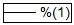

_Programming_tab/Substitude_1.png)
_Programming_tab/100px-Substitude_1_2.png)
Ein Textobjekt kann benannt werden, so dass Origin in der Lage ist dieses Objekt während der Ausführung von integrierten oder benutzerdefinierten Skripts zu identifizieren. Unbenannte Beschriftungen werden nur von Skript beeinflusst, das in das Dialogfeld Programmablauf des Objekts eingegeben wurde (siehe Skripttextfeld unten). Um ein Textobjekt zu benennen, geben Sie den Namen in das Textfeld Name ein.
|
Warnung: Einige Beschriftungen -- wie die Legende und die Achsentitel -- werden von Origin benannt. In den meisten Fällen werden Sie Legenden und Achsentitel nicht umbenennen wollen; wenn Sie dies tun, funktionieren Menübefehle, die die Beschriftung aktualisieren, nicht mehr oder erzeugen doppelte Beschriftungen. Ein Grund, warum Sie die Diagrammlegende vielleicht umbenennen möchten: Sie haben die Legende benutzerdefiniert angepasst und möchten sicherstellen, dass Ihre Anpassungen nicht überschritten werden. |
Um Kontrolle über den Effekt von Layerbearbeitungen und der Neuskalierung von Achsen auf die Größe und Position der Beschriftung zu haben, wählen Sie eine der folgenden Optionen:
Seite Wenn die Beschriftung mit der Seite verbunden ist, ist sie sowohl in Position und Skalierung unabhängig von ihrem Layer. Die Beschriftungsposition und Größe werden nicht von einer Verschiebung oder Größenänderung des Layers oder einer Änderung der Achsenskalierung beeinflusst. Die Beschriftung ist dennoch ein Teil des Layers und wird zusammen mit diesem gelöscht.
Layerrahmen Wenn die Beschriftung mit dem Layerrahmen verbunden ist, ist ihre Position von ihrem Layer abhängig. Wenn Sie den Layer bewegen, bewegt sich die Beschriftung mit dem Layer. Wenn Sie die Größe des Layers ändern, ändern sich die Dimensionen der Beschriftung proportional und sie verschiebt sich mit dem Layer. Wenn Sie allerdings die Achsen neu skalieren, ändert sich die Größe und Position der Beschriftung nicht.
Layer und Skalierungen Wenn die Beschriftung mit dem Layer und den Skalierungen verbunden ist, ist ihre Größe und Position von ihrem Layer abhängig. Wenn Sie den Layer bewegen, bewegt sich die Beschriftung mit dem Layer. Wenn Sie die Größe des Layers ändern, ändern sich die Dimensionen der Beschriftung proportional und sie verschiebt sich mit dem Layer. Wenn Sie die Achsen neu skalieren, ändert sich die Größe der Beschriftung nicht, sie wird aber verschoben, so dass sie die gleichen XY-Koordinaten beibehält.
Diese Auswahliste ist nur in dem Dialogfeld für die Programmablauf einer Textbeschriftung nützlich. Wählen Sie die entsprechenden Optionen aus, um zu bestimmen, wie Daten oder Variablen in der Meldung durch die Textbeschriftung angezeigt werden. Jedes Mal, wenn Origin die Beschriftung neu zeichnet, wird die Beschriftung aktualisiert, um Änderungen an den Daten oder Variablen zu übernehmen.
Siehe die Screenshots für den Langnamen der Arbeitsmappe, auf den mittels der Beispielausdrücke verwiesen wird.
| Option | Aktion | Beispiel: %(1) | Beispiel: %(2) |
|---|---|---|---|
| 0 | Keine Verknüpfung |  | |
| 1 | Die Substitution wird wörtlich im Link angezeigt. | |
|
| 2 | Verknüpfung und Auflösung nur auf erster Ebene | ||
| 3 | Verknüpfung und Auflösung auf bis zu zwei Ebenen |
Um die Auswahlliste zu verwenden, müsssen die richtigen Notationskonventionen in der zugehörigen Textbeschriftung befolgt werden. Grundlegende Notationsregeln finden Sie unter Textbeschriftungen mit Daten und Variablen verknüpfen.
Wenn Sichtbar aktiviert ist, können Sie den Dialog Eigenschaften der Zeichnung öffnen, indem Sie doppelt auf die Beschriftung klicken. Die Beschriftung kann auch verschoben oder ihre Größe geändert werden.
Wenn dieses Kontrollkästchen deaktiviert ist, ist die Beschriftung nicht sichtbar und ihre Eigenschaftsdialoge können nicht durch einen Doppelklick auf die Zeichnung aufgerufen werden. Stattdessen müssen Sie den Bearbeitungsmodus öffnen (Bearbeiten: Bearbeitungsmodus), um die Beschriftung zu zeigen. Klicken Sie dann doppelt auf sie, um den Dialog Eigenschaften zu öffnen. Nach Bearbeiten der Beschriftung verlassen Sie den Modus wieder, indem Sie Bearbeiten: Bearbeitungsmodus auswählen.
Wenn das Kontrollkästchen Auswählbar deaktiviert ist, ist eine Auswahl oder Verschiebung der Beschriftung vollständig eingeschränkt. Diese Option ist nützlich, wenn Sie eine Beschriftung als Hintergrund für eine Seite oder einen Layer verwenden. Wenn Auswählbar nicht aktiviert ist, können Sie die Tastenkombination ALT+Doppelklick nicht verwenden, um den Dialog zu bearbeiten. Wechseln Sie stattdessen in den Bearbeitungsmodus (Bearbeiten: Bearbeitungsmodus), klicken Sie auf die Beschriftung und wählen Sie Format: Objekt Eigenschaften.
Nur für gezeichnete Objekte verfügbar. Aktivieren Sie das Kontrollkästchen, um das Objekt in Echtzeit zu aktualisieren, sobald ein Zeichenereignis in Echtzeit auftritt.
Die in der Auswahlliste ausgewählte Option definiert die Umstände, die für eine Skriptausführung benötigt werden. Geben Sie den auszuführenden Skript in das entsprechende Textfeld unter dieser Auswahlliste ein.
| Option | Skriptausführungsmethode |
|---|---|
| Kein | Es wird kein Skript ausgeführt. |
| Mausklick | Ausführen des Skripts, wenn auf die Schaltfläche geklickt wird. |
| Verschoben | Ausführen des Skripts, wenn auf die Schaltfläche verschoben wird. |
| Größe verändert | Ausführen des Skripts, wenn die Größe der Schaltfläche verändert wird. |
| Verschoben oder Größe verändert | Ausführen des Skripts, wenn die Schaltfläche verschoben oder ihre Größe geändert wird. |
| Neu gezeichnet | Ausführen des Skripts, wenn die Schaltfläche neu gezeichnet wird. |
| Echtzeit | Ausführen des Skripts, wenn ein Echtzeitereignis auftritt. Diese Ereignisse werden im Allgemeinen durch DDE Datentransfer oder durch ein Datenerfassungsmodul erzeugt. |
| Fenster erstellen | Ausführen des Skripts, wenn das Fenster der Schaltfläche zum ersten Mal geöffnet wird. |
| Beim Schließen des Fensters | Ausführen des Skripts, wenn das Fenster der Schaltfläche geschlossen wird. |
| Beim Aktivieren des Fensters | Ausführen des Skripts, wenn das Fenster der Schaltfläche aktiviert wird. |
| Beim Deaktivieren des Fensters | Ausführen des Skripts, wenn das Fenster der Schaltfläche nicht mehr aktiv ist. |
| Neue Auswahl | Ausführen des Skripts, wenn die nicht ausgewählte Schaltfläche angeklickt wird. |
| Vor dem Speichern | Ausführen des Skripts genau vor dem Speichern des Projekts |
| Neuskalieren der Achsen | Ausführen des Skripts, wenn die Diagrammachsen neu skaliert werden. |
| Alle Ereignisse | Ausführen des Skripts, wenn alle der genannten Ereignisse auftreten. |
| Maskierung ändern | Ausführen des Skripts, wenn die Maskierungsdaten geändert werden. |
| Datenänderung | Ausführen des Skripts, wenn Daten aktualisiert werden. |
Um einen Skript einem Objekt zuzuordnen, geben Sie den Skript direkt ist dieses Textfeld ein oder kopieren Sie ihn aus einem Texteditor und fügen ihn anschließend ein.
Sie können zum Beispiel LabTalk- oder Python-Skript in das Feld eingeben und es mit einem dieser Trigger ausführen.